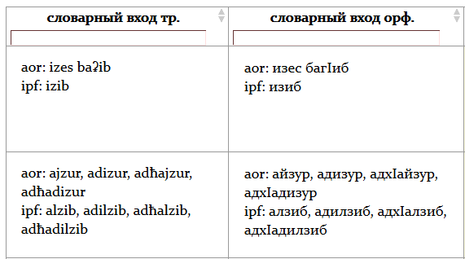
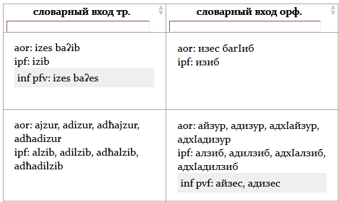
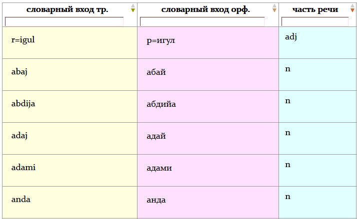
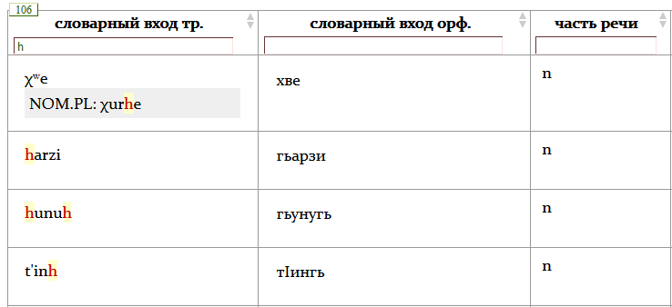
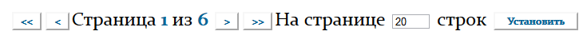

|
Большая часть словарных входов снабжена дополнительно раскрывающейся областью, открывающейся при одинарном нажатии
левой кнопки мыши на словоформе (Рис. 2). В ней содержится дополнительная грамматическая информация о словарном входе. Так, у всех
существительных (за исключением форм pluralia tantum) и прилагательных в раскрывающейся области содержится форма именительного
падежа множественного числа. У глаголов в раскрывающейся области приводится перфективный инфинитив.
Рис. 1 Рис. 2  |
|
Каждая из колонок словаря снабжена строкой сортировки. С помощью нее возможен поиск и фильтрация по имеющимся
словарным входам (см. пример на Рис. 3). С помощью строки сортировки может быть реализован не только по целым словоформам, но и по их
фрагментам (см. пример на Рис. 4). Фильтрация и поиск осуществляются в том числе и по дополнительно раскрывающимся блокам. Над строкой
сортировки выводится количество результатов найденных в словаре, соответствующих пользовательскому запросу. Обнаруженный в словаре
пользовательский запрос подсвечивается красным цветом внутри самих словоформ. Сброс сортировки осуществляется посредствам удаления
пользовательского запроса. При сортировке соседних столбцов результаты предыдущей сортировки сохраняются. Сброс сортировки – Crtl + Click
(одновременное нажатие клавиши Ctrl и правой кнопки мыши).
Рис. 3 Рис. 4  |
|
Дополнительно каждая из колонок снабжена возможностью сортировки в алфавитном и обратном алфавитному порядках (Рис. 3).
Сортировка реализуется посредствам нажатия на заголовке каждой из колонок. Первое нажатие правой кнопкой мыши на заголовке колонки реализует
сортировку по алфавиту, второе – сортировку в порядке обратном алфавитному. Сброс сортировки – Crtl + Click (одновременное нажатие клавиши
Ctrl и правой кнопки мыши). Сортировка дополнительно показала графически: стрелка «вниз» окрашена – сортировка по алфавиту, стрелка «вверх»
окрашена – сортировка в порядке обратном алфавитному, стрелки «вверх» и «вниз» не окрашены – сортировка не реализована.
|
|
Таблица может быть выведена постранично, количество примеров на странице определяется пользователем. Навигация
по страницам словаря может осуществляться как с помощью кнопок, расположенных непосредственно над самой таблицей, так и с помощью клавиатуры.
Следующая страница – Ctrl + Right Arrow, предыдущая страница – Ctrl + Left Arrow, последняя страница – Ctrl + Alt + Right Arrow, первая
страница – Ctrl + Alt + Left Arrow. Количество примеров на странице задается пользователем в окне рядом с кнопками навигации. После введения
запроса необходимо нажать на кнопку «Установить» (см. Рис. 6). Чтобы вывести все имеющиеся словарные входы словаря необходимо оставить поле
пустым и нажать на кнопку «Установить». Вывод всех словарных входов может потребовать дополнительного времени.
Рис. 5  |
|
На главной странице есть возможность выкачать весь словарь в двух форматах (.csv и .xls).
|